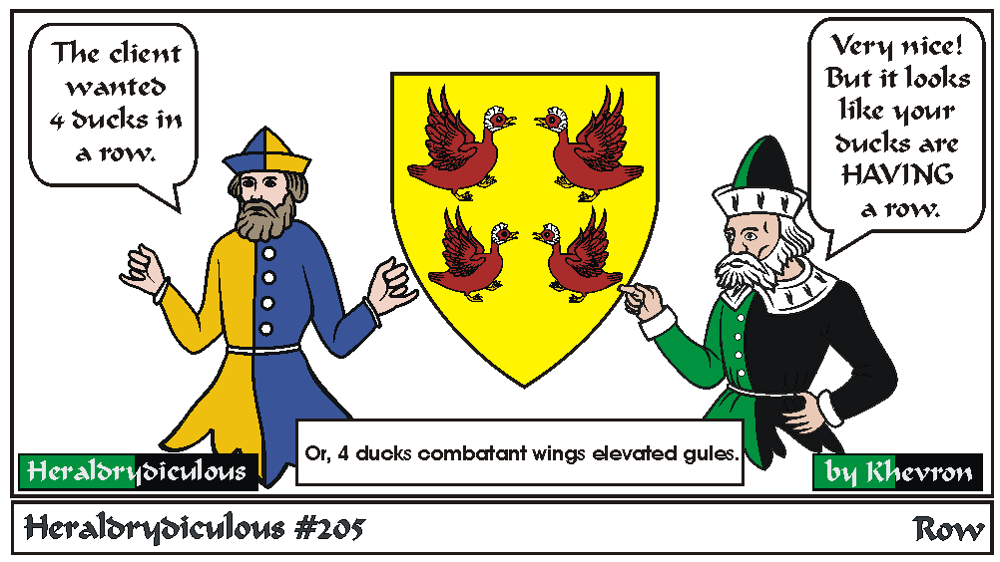
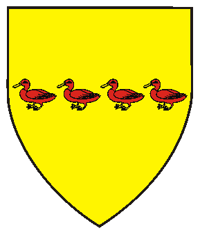

Ducks/birds can't be 'Rampant' (or Combatant) in SCA period Heraldry (though there are a couple of registrations, but should wings be forward?), but the raised foot appears in more modern heraldry, and MAY be noted as passant (walking).
Four Ducks in a Row:

e-mail: